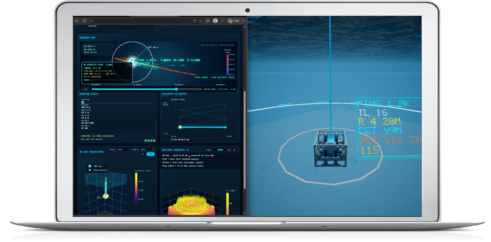

City of Boston Municipal AI Architecture
BCP EnterpriseBluemvmt Cloud Platform (BCP) Implementation Portal
Executive Overview & Platform Architecture
Bluemvmt Cloud Platform (BCP) Municipal Integration
The Bluemvmt Cloud Platform (BCP v2.0/3.0) provides a scalable, cloud-native enterprise AI and data discovery framework deployed on Google Cloud Platform (GCP). Built specifically to handle heterogeneous, high-velocity urban data streams—from real-time water depth telemetry and traffic loop sensors to 3D point clouds and regulatory PDFs—BCP decouples compute execution, multi-modal storage, and multi-agent orchestration into microservices managed via Google Kubernetes Engine (GKE).
Platform Architectural Layers Select a layer to inspect
User Interface Layer
Front-End & Pixel StreamingUnderlying Technologies
Core Technical Function
Delivers card-based visualization, multi-threaded conversational chat, and interactive 3D digital twin rendering directly in standard web browsers without requiring heavy client-side plugins.
Municipal Value Add
Allows non-technical staff across BTD, BWSC, and Emergency Management to inspect complex spatial models and 3D hydrodynamic flood renders from standard municipal desktop web browsers.
Bluemvmt Multi-Modal Information Workspace Interface
The standard Bluemvmt UI provides natural language prompt inputs, automated databooks, sidecar tools, and saved investigation results across desktop and mobile devices. Non-technical staff can query structured datasets and instantly spawn visualization cards.
Regulator Outfall #42 • Fort Point Channel
Adjusted signal timing at Atlantic & Congress St
Precipitation Frequency Spatial Layer
Unified Data Fabric (UDF) Ingestion Distribution
The UDF breaks down data silos by standardizing disparate structured, unstructured, spatial, and real-time streaming data formats into AI-optimized DataFrames and high-dimensional vector embeddings.
3D Digital Twin & Acoustic Telemetry Engine
GPU-accelerated sidecar containers rendering 3D acoustic ping propagation, depth bathymetry, salinity gradients, and AUV/subsea telemetry in real-time.
